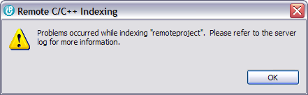

Indexer Problems

A prompt will appear when problems are encountered during indexing. Information
on these problems can be found in the Remote System Explorer rsecomm.log, located in
$HOME/.eclipse/RSE/ on the remote host.
Editor Warnings
There is a known issue where sometimes the remote editor displays false warnings about syntax errors or invalid include directives. To disable editor warnings do the following: